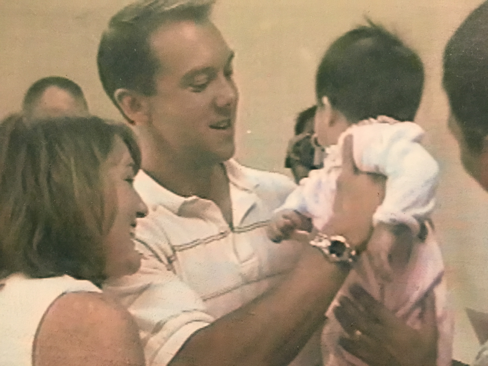
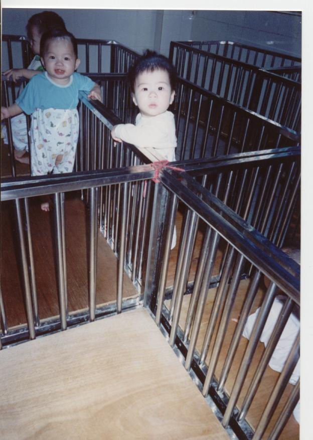
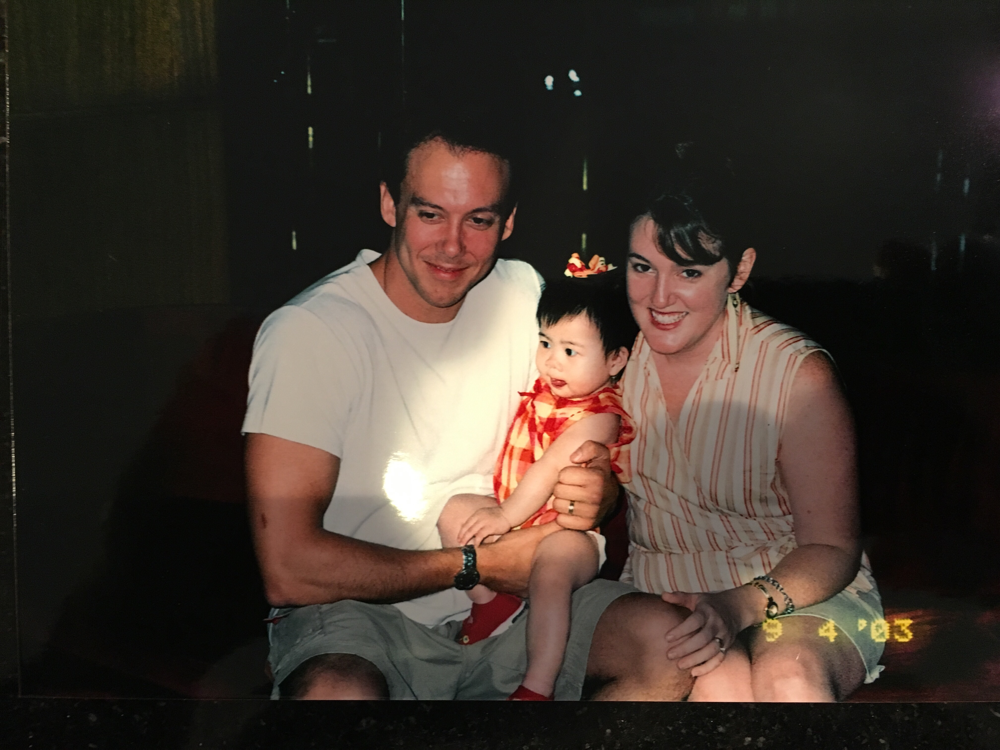

Mission Trip's Purpose
On a mission trip, you have a part, a cause. You were sent on this trip to fufill someone's life. Being part of a mission trip takes time and to never gie up on that someone, who is not as fortunate as us or as fortunate as us.
On a Mission Trip
In the year of 2016, I was called to go to China for two mission trips. The first one I went on was in mid-June. Sunny, humid, and hot in China at this time. We are on the eastern part of China, in a city called Hanzhou. This city was a very rich one, I saw some expensive cars there, like BMWs and converdables. Some cars that
  